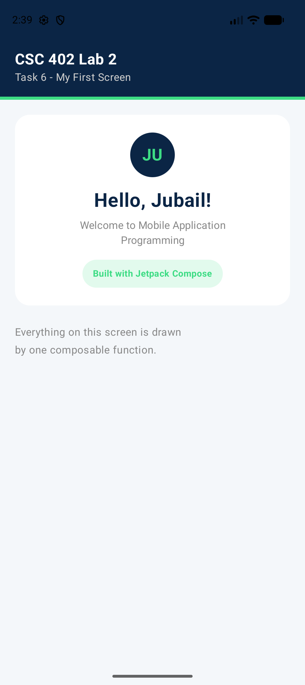
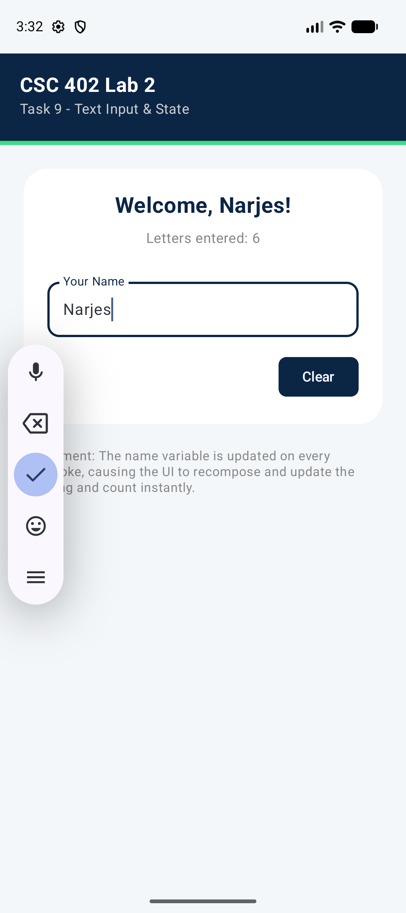
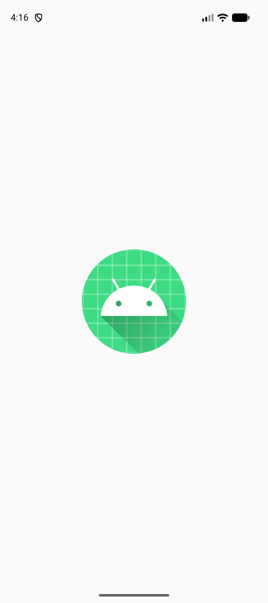

Task 7 — Student ID Screen

Student: Narjes Al-Wohaib
ID: 2240002170
Major: Computer Science
Level: 7
--- Task 1: Student Information --- Name: Narjes Al-Wohaib ID: 2240002170 GPA: 4.42 Credits: 78 Status: Active
--- Task 3: Score Calculation --- Student Narjes achieved a weighted score of 91.40
--- Task 4: List of Languages --- Original list: [Kotlin, Java, Python, C++, Swift] First language: Kotlin Last language: Swift Sorted list: [C++, Java, Kotlin, Python, Swift] Does the list contain Kotlin? Yes
--- Task 5: Course Management --- Courses with >= 3 credits: [CSC 402, CSC 311, CSC 340, MATH 202] All course titles: [Mobile Application Programming, Database Systems, Operating Systems, Discrete Mathematics, Technical Writing] Total registered credits: 15 Search Result (CSC 402): Mobile Application Programming Updated Course Schedule: CSC 402 - Mon / Wed / Fri



Q1: What is the main difference between 'val' and 'var' in Kotlin?
'val' is used to declare immutable (read-only) variables, meaning their value cannot be changed after initial assignment. In contrast, 'var' declares mutable variables which can be reassigned as needed throughout the code.
Q2: Why are data classes useful in Kotlin application development?
Data classes are highly efficient for holding state because the compiler automatically generates standard methods like equals(), hashCode(), toString(), and copy(). This reduces boilerplate code significantly when creating models for UI lists or database entities.
Q3: How does the 'remember' function help maintain UI state during recomposition?
'remember' stores a value in the Composition during the initial call and returns the stored value during subsequent recompositions. This ensures that local state, such as a counter value or text input, is not reset every time the UI refreshes.
Q4: Explain the role of 'mutableStateOf' in Jetpack Compose.
'mutableStateOf' creates an observable state holder that Jetpack Compose tracks for changes. When the value inside the state holder is updated, Compose automatically triggers a recomposition of all UI elements that read that specific value.
Q5: When should you use 'LazyColumn' instead of a standard 'Column'?
'LazyColumn' is preferred for long or infinite lists because it only composes and lays out items that are currently visible on the screen. A standard 'Column' renders all items immediately, which can cause performance issues and memory lag for large datasets.
Q6: What is 'State Hoisting' and why is it recommended?
State hoisting is the pattern of moving state to a component's caller to make the component itself stateless. This is recommended because it makes composables more reusable, easier to test, and allows the parent to manage the source of truth for the entire screen.
Q7: Describe a scenario where you would use a 'derived state' in a Compose screen.
A derived state is useful when one value depends entirely on another, such as calculating a 'Total' sum from a list of items or checking if a text input is valid. In Task 9, the letter count was a derived state that updated automatically as the user typed their name.
Q8: How does 'Modifier.weight(1f)' affect the layout within a Row or Column?
'Modifier.weight(1f)' instructs the layout engine to give the element all remaining available space after other non-weighted siblings have been measured. This is essential for creating flexible UI components, such as a text label that expands to fill the width of a card next to a fixed-size icon.
I used ChatGPT and Android Studio Gemini to assist with project setup, UI component structuring, and troubleshooting emulator connectivity issues. These tools helped in generating boilerplate for LazyColumn and ensuring Material 3 styling consistency across screens.